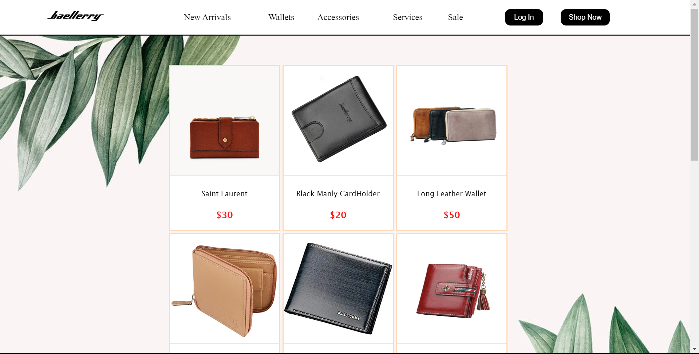
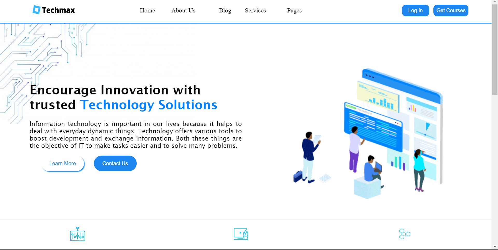

About Me
Hi, I'm Jessica Joy Tuazon, I am a passionate and eager learner, constantly seeking to deepen my knowledge and skills in web designing and web development. As a fresh graduate student of BS Computer Science from the University of the East, I aspire to continuously grow and expand my expertise in creating captivating and innovative web experiences
Birdleaf: A Nature Theme
BirdLeaf is a nature-themed website created using HTML, CSS, and Bootstrap, offering visitors a visually captivating exploration of the natural world.
Monster's University.com
I proudly designed and developed a captivating Monster's University Website, drawing inspiration from the beloved Monster University movie. This project served as a valuable hands-on activity in my course, showcasing my skills in web development.

QX Attendance System
During my On-the-job training, my supervisor entrusted me with the task of creating a UI/UX design for their attendance system, which was then implemented using HTML, CSS, and JavaScript. Despite the time constraint of only three days remaining in our training, we made significant progress and produced this result.

ChatBot: Ordering Assistant
In my course subject, my professor assigned us the task of building a Chatbot using HTML, CSS, and JavaScript, and I am proud to present the result of my efforts. This Chatbot showcases my skills in front-end development and demonstrates the practical application of the concepts learned in the course..

Small Business: Order Website
For my course subject, my professor challenged us to create an earning website and develop a business plan around it. I decided to focus on 'Baellery,' a stylish and trendy wallet/purse shop, and here is the outcome of my entrepreneurial vision combined with web development skills.
Techmax: A Modern Technology Theme
As a dedicated student, I enthusiastically embraced the challenge given by my professor to create a Technology Theme Website. With passion and determination, I am proud to present the result of my hard work, showcasing my skills in web development and my deep appreciation for the world of technology.
